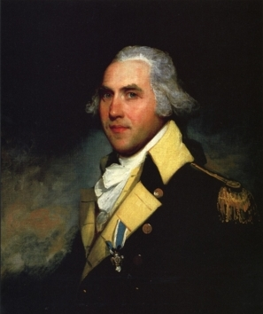

by
Stefan Bielinski
Peter Gansevoort was born in July 1749. He was the eldest son of prominent businessman Harmen and Magdalena Douw Gansevoort. He grew up with many siblings in the family home on Market Street. He sometimes was known as Pieter Jr. to prevent confusion with older kinsmen.
As most of the existing scholarship on this subject has focused on his military exploits, this sketch seeks to shed light on Peter Gansevoort in his Albany context - as a resident of the city of Albany.
Both of Harme Gansevoort's sons followed their father in family-based business enterprises. Peter pursued processing (chiefly brewing and lumbering) and shipping operations while Leonard practiced law and moved toward public service. Like his brother, Peter was an emerging young leader on the eve of the Revolution. However, his budding career was put on hold when war broke out in 1775.
Previously holding a militia commission, in May 1775 Peter Gansevoort was commissioned a major in the New York regiment of the Continental army. Rising to Brigadier General, he served throughout the Revolutionary war. He participated in the invasion of Canada in 1775; was promoted to Lieutenant Colonel and given command of the Third New York Regiment at Lake George in June 1776; gained renown as the defender of Fort Stanwix in the summer of 1777; served at Saratoga, in the Mohawk Valley, and in the mid-Hudson. He was promoted to Brigadier General of the New York militia in 1781.
Peter was twenty-nine in January 1778 when he married Catharina Van Schaick - the daughter of an Albany merchant, at her brother's island estate in today's Cohoes. Between 1779 and 1791, their six children were baptized in the Albany Dutch church. Their home was next door to his father's house on Market Street. Peter took charge of the family brewery following the death of his uncle, Johannes, in 1781. In 1788, young Conrad Gansevoort also held a place in his home.
After accompanying General Washington on his tour of northern battlefields in 1783, "the hero of Fort Stanwix" settled into a business life in Albany. He was appointed sheriff of Albany city and county in 1790 and served until 1792. In 1800, his home was served by four slaves. In charge of a number of family properties on Market Street, his economic focus was on the Albany brewing operation, and on grinding, lumbering, and sawing at the "Snook Kill" Falls in new Saratoga County. He had purchased confiscated loyalist lands there at the end of the war and was developing a mill town at the place now called "Gansevoort."
He contracted a "cold" during the winter of 1811-12 which lingered for the remainder of his life. General Peter Gansevoort died in July 1812 a few days shy of his sixty-third birthday. His monument stands in Albany Rural cemetery.
notes
 Sources: The life of Peter Gansevoort is CAP biography number 91. This profile is derived chiefly from family and community-based resources. All existing biographical treatments are biased toward his so-called military career. He needs a comprehensive study. Until then, begin with Wikipedia. Beyond that, several substantial online biographies further articulate his career. Wartime correspondence online;
Sources: The life of Peter Gansevoort is CAP biography number 91. This profile is derived chiefly from family and community-based resources. All existing biographical treatments are biased toward his so-called military career. He needs a comprehensive study. Until then, begin with Wikipedia. Beyond that, several substantial online biographies further articulate his career. Wartime correspondence online;
Portrait by Gilbert Stuart about 1794. In the collections of the Munson Williams Proctor Institute in Utica. Portrait adapted from an online posting. His regimental uniform coat dated 1776 is part of an exhibition at the Smithsonian National Museum of American History.
posted 8/15/03; last revised 3/22/15